结论先行：缩量僵局、赚钱效应差，方向未明；总仓位上限 4 成，不追涨。指数级信号全部为「无方法买点」，中线 4 只、短线 5 只全部不给买点，仅给触发条件与止损位。今日唯一可验证的强势主线是玄学链从「羊字辈」切到「东方字样」——东财涨停池里 9 只带「东方/洋」的个股封板，羊字辈则明显分化。
实测：上证 +0.32% 收 3660.79，深成指 -0.27%，创业板指 -0.27%，沪深300 +0.05%。两市成交额 10785.6 亿，较前一日 12376.1 亿缩量 12.9%——「持续缩量」定性成立。
涨跌家数 2242 / 3148（平 183），个股涨跌幅中位数 -0.307%，涨停 54 家、跌停 1 家（东财口径，不含 ST）。赚钱效应差成立：指数微涨但下跌家数是上涨家数的 1.4 倍，属于典型的缩量护盘、个股失血。
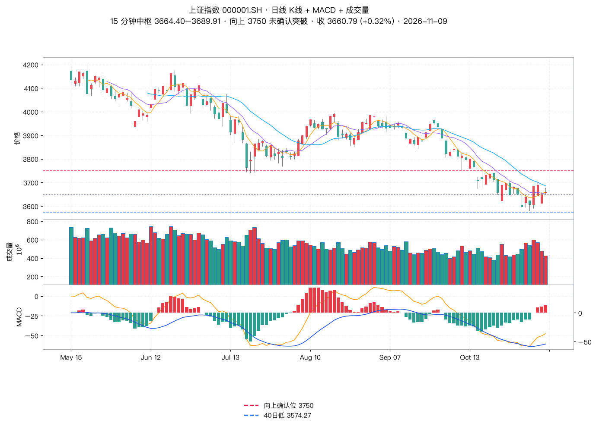
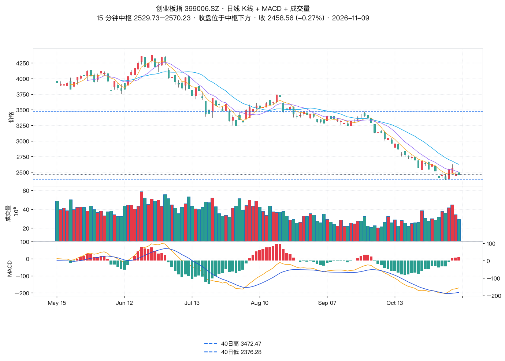
| 板块 | 涨跌幅 | 涨/跌家数 | 领涨 |
|---|---|---|---|
| 光伏设备 | -2.22% | 5 / 60 | 东方日升 +5.65% |
| 光伏主材 | -2.51% | 0 / 2 | 通威股份 -1.80% |
| 光伏辅材 | -2.11% | 2 / 16 | 安彩高科 +5.33% |
| 光伏电池组件 | -2.50% | 1 / 21 | 东方日升 +5.65% |
| 光伏发电 | -0.32% | 1 / 11 | 东方新能 +9.91% |
| 光伏加工设备 | -1.18% | 2 / 8 | ST京机 +2.01% |
老师原文：「市场近期对于玄学题材比较热门，从『羊字辈』到带『东方』字样的题材，玄学链在扩展。羊字辈中的个股内部分化。」
| 名称 | 代码 | 收盘 | 涨跌幅 |
|---|---|---|---|
| 东方海洋 | 002086.SZ | 4.37 | +10.08% |
| 东方环宇 | 603706.SH | 20.19 | +10.03% |
| 日出东方 | 603366.SH | 9.89 | +10.01% |
| 盛洋科技 | 603703.SH | 11.1 | +10.01% |
| 东方通信 | 600776.SH | 12.22 | +9.99% |
| 东方嘉盛 | 002889.SZ | 16.4 | +9.99% |
| 大东方 | 600327.SH | 5.4 | +9.98% |
| 东方创业 | 600278.SH | 7.83 | +9.97% |
| 澳洋健康 | 002172.SZ | 6.18 | +9.96% |
| 东方新能 | 002310.SZ | 2.55 | +9.91% |
| 九阳股份 | 002242.SZ | 26.1 | +3.98% |
| 大西洋 | 600558.SH | 5.44 | +3.03% |
| 三羊马 | 001317.SZ | 48.3 | +2.29% |
| 海洋王 | 002194.SZ | 9.16 | +2.23% |
| 七匹狼 | 002029.SZ | 9.05 | +1.69% |
| 岳阳兴长 | 000819.SZ | 11.76 | +1.55% |
| 水羊股份 | 300740.SZ | 16.4 | +1.30% |
| 明阳智能 | 601615.SH | 8.36 | +0.12% |
| 圣阳股份 | 002580.SZ | 18.12 | +0.06% |
| 扬杰科技 | 300373.SZ | 73.43 | +0.03% |
| 鲁阳节能 | 002088.SZ | 11.08 | -0.09% |
| 长阳科技 | 688299.SH | 11.75 | -0.17% |
| 明阳电路 | 603739.SH | 11.71 | -1.26% |
| 襄阳轴承 | 000678.SZ | 17.51 | -1.46% |
| 太阳能 | 000591.SZ | 4.45 | -1.77% |
| 久之洋 | 300164.SZ | 7.82 | -2.13% |
| 板块 | 涨跌幅 | 涨/跌家数 | 领涨 |
|---|---|---|---|
| 元件 | +2.49% | 59 / 8 | 世运电路 +9.99% |
| 半导体 | +0.46% | 95 / 91 | 燧原科技-U +17.26% |
| 半导体设备 | -0.19% | 10 / 15 | 超纯应材 +4.66% |
| 半导体材料 | -0.04% | 14 / 18 | 先导基电 +4.20% |
| 机器人 | +2.70% | 22 / 0 | 宇树科技-W +9.04% |
| 消费电子 | +1.20% | 65 / 31 | 信维通信 +12.77% |
| 光学元件 | +1.40% | 20 / 6 | 奥来德 +6.92% |
| 被动元件 | +1.02% | 15 / 4 | 艾华集团 +3.10% |
| 电子 | +0.91% | 313 / 196 | 世运电路 +9.99% |
| 通信设备 | +1.70% | 71 / 23 | 东方通信 +9.99% |
概念板块：光通信模块 +1.87%、CPO 概念 +1.61%、光纤概念 +1.20%、液冷服务器 +1.05%、激光雷达 +1.36%、光刻机 +0.72%；电池 -1.06%、锂电池 -0.86%、电池化学品 -1.80%。
老师纪律：中线参与需结合市场强弱定仓位上限；可操作仓内分仓，持仓 3–5 只，试探性第一笔约为该股仓位的 5%；买点操作、做好风控；走势没坏前可持有，但要有自己的短线买卖策略。
| 标的 | 题材 | 收盘 | 老师定性 | 15 分钟中枢（实测） | 触发条件 | 动作 |
|---|---|---|---|---|---|---|
| 药明康德 603259 | 大医药 | 150.29 (+2.24%) | 很抗跌，但无方法买点 | 144.84–152.8 末笔向上（11-06 13:15 → 11-09 10:00） |
等 15 分钟二买 + 日线有力度底分型验证；15 分钟仍未对 151 完成突破确认，观察能否做横盘共振 | 观望 |
| 中国船舶 600150 | 船舶 | 35.01 (-0.45%) | 无方法买点 | 35.0–35.58 末笔向下（11-09 09:45 → 11-09 14:00） |
15 分钟内部构筑下跌中枢，等收复上沿后做 15 分钟共振上涨中枢再找机会 | 观望 |
| 瑞芯微 603893 | 端侧 AI | 212.00 (-0.32%) | 无方法买点，日线震荡、前高附近横盘 | 211.28–221.0 末笔向下（11-09 10:00 → 11-09 13:15） |
15 分钟内部震荡不充分，等 2–3 天维持共振结构后再寻找机会；不追涨 | 观望 |
| 伊利股份 600887 | 大消费 / 防守 | 31.14 (-0.99%) | 无方法买点，加速上涨后不推荐追涨 | 30.98–31.27 末笔向上（11-09 09:45 → 11-09 14:30） |
调整不充分，15 分钟围绕小级别中枢反复震荡，等跌破下沿后验证强弱（即日线出有力度顶分型调整后的止跌机会） | 观望 |
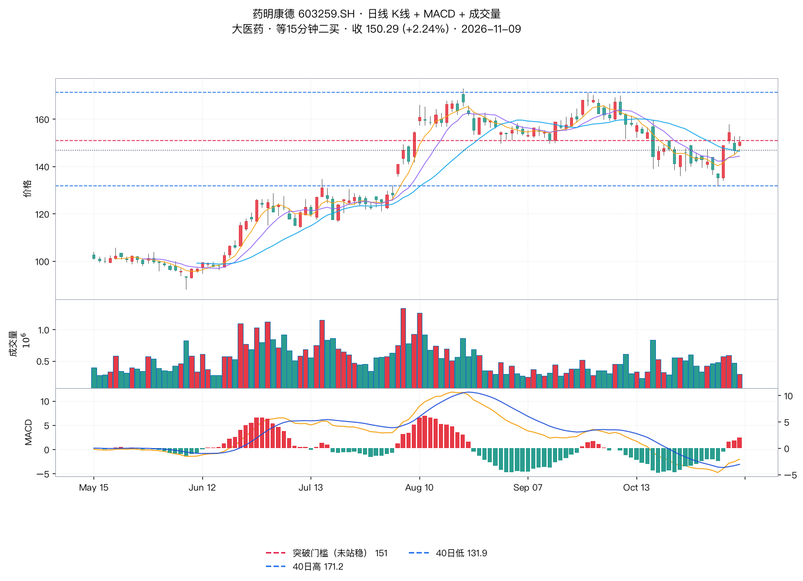
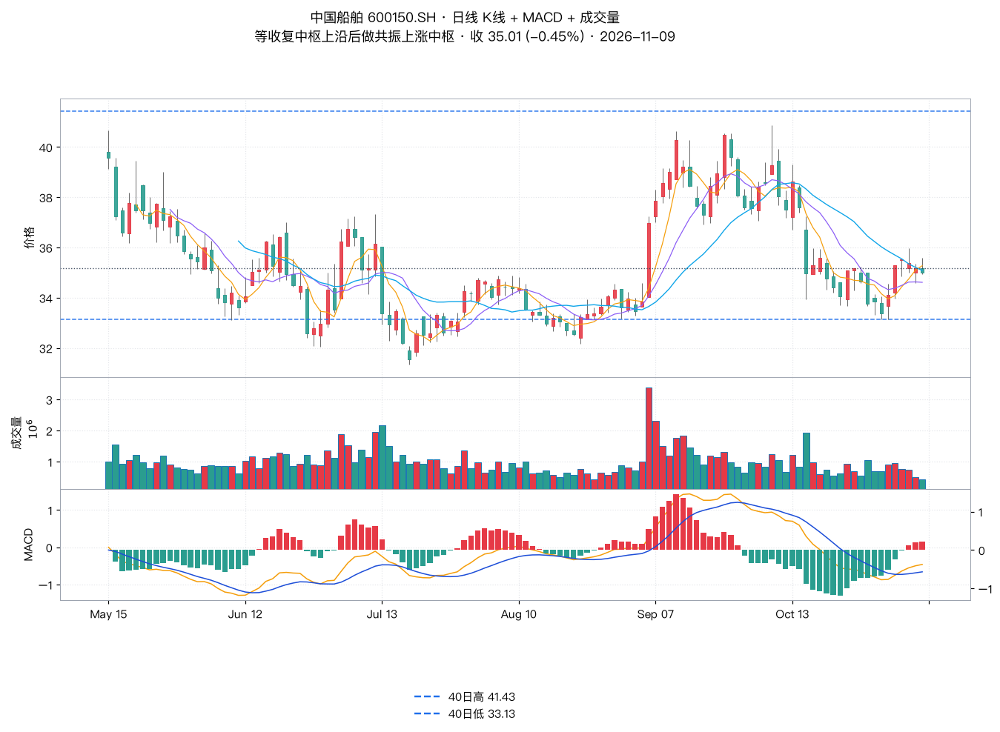
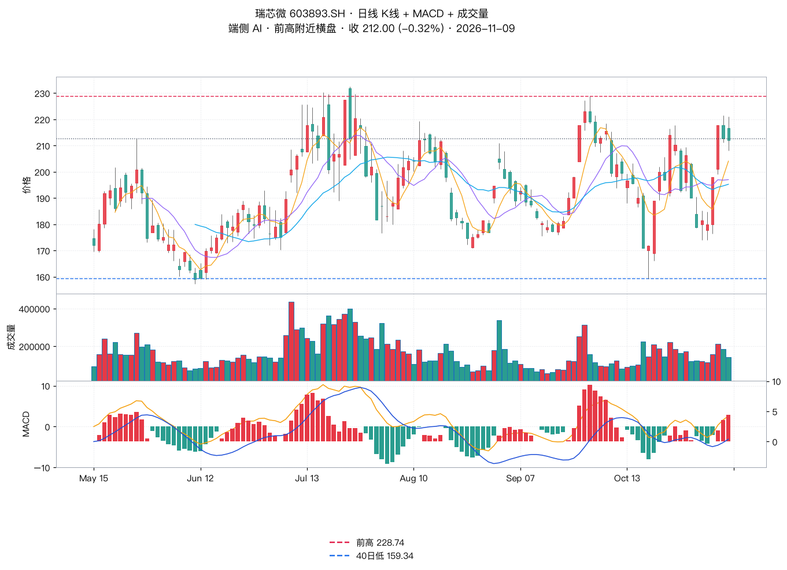
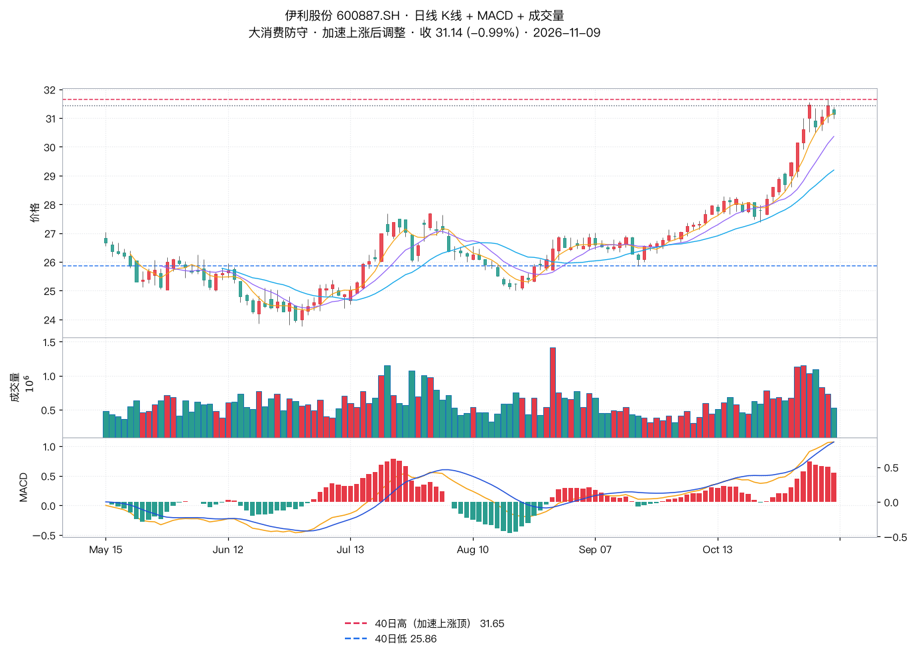
| 标的 | 题材 | 收盘 | 老师定性 | 15 分钟中枢（实测） | 关键位 / 止损 | 动作 |
|---|---|---|---|---|---|---|
| 江波龙 301308 | 存储 | 215.56 (+0.37%) | 无方法买点，等日线有力度底分型 | 213.86–219.53 末笔向上（11-06 13:45 → 11-09 10:15） |
前期短线进场者：重新设止损点 208 后酌情参考选择 实测：今日最低 215.52，止损未触发 |
持有观察 / 守 208 |
| 兆易创新 603986 | 存储 | 238.41 (-0.45%) | 无方法买点，等日线有力度底分型；不建议用 15 分钟验证底分型（内部已做出下跌中枢），需三买辅助 | 238.2–247.85 末笔向下（11-06 11:00 → 11-09 09:45） |
止损点今日已跌破，一般参考交易规则先离场 实测：今日最低 237.28 = 40 日新低，收盘 238.41 |
按纪律离场 |
| 海天瑞声 688787 | 人形机器人 | 126.20 (-2.31%) | 无方法买点，且所属板块强度在下降 | 127.66–128.98 末笔向上（11-09 11:15 → 11-09 13:45） |
需 15 分钟收盘站住高点 141 且过上影线 实测：今日最高仅 140.00，未触 141；收盘 126.20 跌破中枢下沿 127.66 |
先观察 |
| 华策影视 300133 | AI 视频 | 9.70 (-3.67%) | 无方法买点，上沿震荡有上冲但出不了突破的三买，短线存在见顶风险 | 9.33–9.77 末笔向上（11-04 13:30 → 11-05 15:00） |
不追涨，先观察板块热度是否退掉 实测：今日冲高 11.04 后收 9.70（-3.67%），确为冲高回落 |
不追涨 |
| 云铝股份 000807 | 非热点 / 震荡 | 24.87 (+1.43%) | 震荡结构，稳健等向上突破 | 24.85–25.09 末笔向下（11-09 10:00 → 11-09 13:15） |
稳健：突破 25.91 后出 15 分钟底分型回抽确认的三买 激进：15 分钟收盘站住 25.13 后过上影线 实测：今日最高 25.13（刚好触及）但收盘 24.87，条件未成立 |
等条件 |
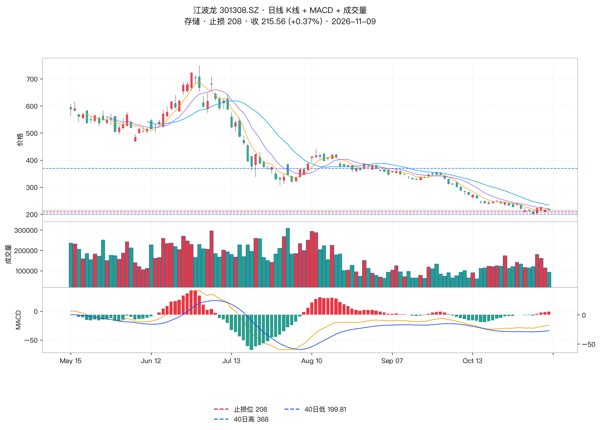
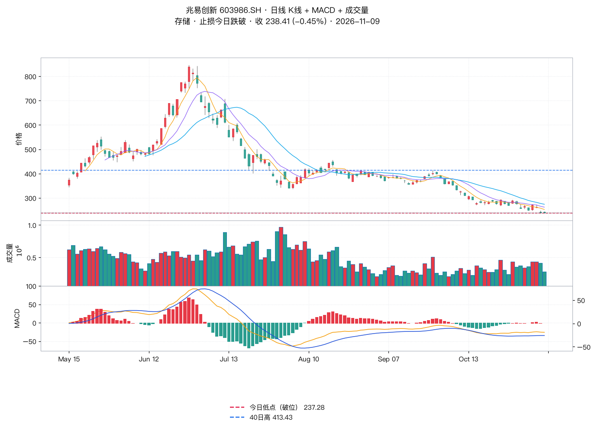
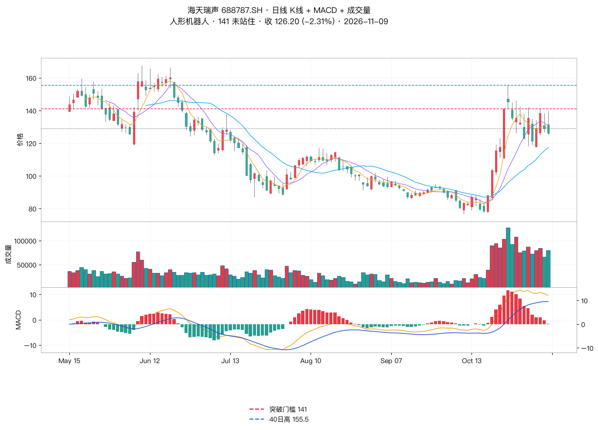
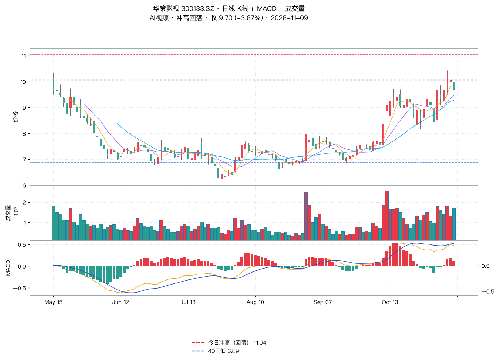
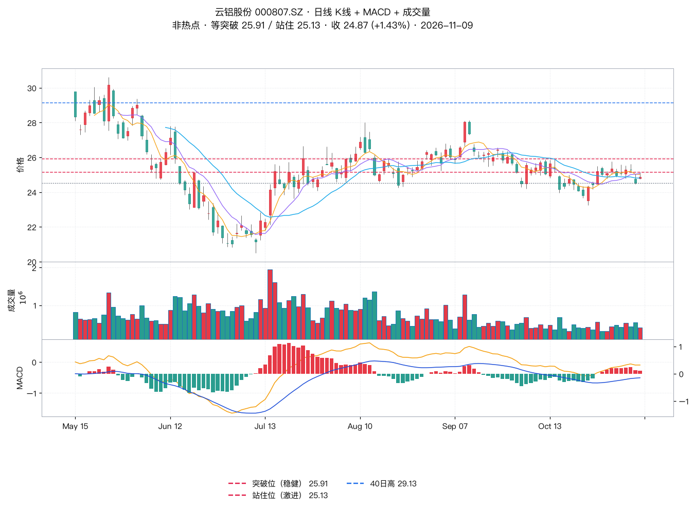
| 名称 | 代码 | 收盘 | 涨跌幅 | 60 日涨幅 | 距 60 日高 | 近 5 日涨幅 | 量比(今/5日均) |
|---|---|---|---|---|---|---|---|
| 润贝航科 | 001316.SZ | 30.6 | +9.99% | 13.3% | -5.9% | 28.1% | 1.56 |
| 上纬新材 | 688585.SH | 216.02 | +20.00% | 32.9% | 0.0% | 26.5% | 1.28 |
| 雪人集团 | 002639.SZ | 15.95 | +10.00% | 26.5% | -2.3% | 15.3% | 1.42 |
| 冰山冷热 | 000530.SZ | 9.57 | +10.00% | 89.9% | 0.0% | 9.9% | 0.42 |
| 晶华新材 | 603683.SH | 18.13 | +10.01% | 15.3% | -4.7% | 8.2% | 1.24 |
| 腾达科技 | 001379.SZ | 15.85 | +9.99% | -0.6% | -6.5% | 8.0% | 0.96 |
| 泰尔股份 | 002347.SZ | 7.0 | +10.06% | 16.3% | -4.0% | 7.4% | 0.66 |
| 厦门钨业 | 600549.SH | 36.14 | -0.19% | -39.7% | -42.6% | 6.9% | 0.57 |
| 信通电子 | 001388.SZ | 23.29 | +10.01% | -7.9% | -7.9% | 5.0% | 1.36 |
| 日盈电子 | 603286.SH | 55.36 | +9.99% | 30.7% | -5.0% | 4.6% | 0.61 |
| 奥士康 | 002913.SZ | 58.42 | +10.00% | 5.6% | -40.5% | 4.5% | 0.72 |
| 宝武镁业 | 002182.SZ | 10.36 | +0.00% | -19.5% | -20.7% | 3.5% | 0.58 |
| 超声电子 | 000823.SZ | 17.86 | +9.98% | 19.7% | -35.6% | 3.4% | 0.81 |
| 世运电路 | 603920.SH | 33.58 | +9.99% | -6.9% | -30.2% | 2.2% | 0.8 |
| 安泰集团 | 600408.SH | 3.32 | +9.93% | 17.3% | -18.4% | 1.8% | 0.97 |
| 豪能股份 | 603809.SH | 8.68 | +1.76% | -9.1% | -10.4% | 0.8% | 0.92 |
按「剔除涨幅大、保留位置不高」筛出的低位置候选：世运电路（元件，60 日 -6.9%、距 60 日高 -30.2%）、信通电子（电网设备 + 算力/机器人，60 日 -7.9%）、腾达科技（60 日 -0.6%）、泰尔股份（60 日 +16.3%）、超声电子 / 奥士康（元件 PCB，位置分别低 35.6% / 40.5%）。位置偏高需剔除：上纬新材（60 日 +32.9% 且创新高）、冰山冷热（+89.9%）、雪人集团（+26.5%）、润贝航科（2 连板）。
老师原话：港股因无涨跌幅制，操作建议设止损；流动性不好，大资金慎入。香港市场暂无个股推荐，先耐心观察等待。
| 项目 | 老师原文 | 实测数据 | 判定 |
|---|---|---|---|
| 指数涨跌 | 沪 +0.32%、深 -0.27% | 沪 3660.79 (+0.32%）、深 11145.49 (-0.27%) | 一致 |
| 持续缩量 | 明显特征是持续缩量 | 两市 10785.6 亿 vs 前日 12376.1 亿（-12.90%） | 一致 |
| 赚钱效应差 | 市场温度 25 度，赚钱效应差 | 涨 2242 / 跌 3148，中位 -0.307% | 一致 |
| 元件反弹力度大 | 元件今日反弹力度大，中期没止跌 | 元件 +2.49%（59/8），半导体设备 -0.19% | 一致 |
| 光伏设备见高点风险 | 跌破中枢则容易有见高点风险 | 光伏设备 -2.22%（5 涨 60 跌），全链下跌 | 风险已触发 |
| 玄学链扩展 | 从羊字辈到东方字样，羊字辈内部分化 | 东方系 9 只涨停；羊字辈涨跌互现 | 高度一致 |
| 药明康德 151 | 15 分钟未对 151 完成突破确认 | 最高 152.80、收盘 150.29，15 分钟中枢 144.84–152.80 | 一致 |
| 江波龙止损 208 | 重新设止损点 208 | 今日最低 215.52，未触发 | 一致 |
| 兆易创新止损破位 | 止损点今日也跌破，先离场 | 最低 237.28 创 40 日新低 | 一致 |
| 海天瑞声 141 | 无法满足收盘站住 141 后过上影线 | 最高 140.00 未触 141，收盘 126.20 破中枢下沿 | 一致 |
| 华策影视见顶风险 | 上冲但无三买，短线存在见顶风险 | 冲高 11.04 → 收 9.70（-3.67%） | 一致 |
| 云铝 25.13 / 25.91 | 稳健等突破 25.91，激进等站住 25.13 | 最高 25.13 刚好触及但收盘 24.87，均未成立 | 一致 |
| 潜在强势股清单 | 只给筛选逻辑，未列标的 | 本纪要用涨停池 + 位置数据补做 | 原文缺清单 |
原文来源：都业华《高级班》2026-11-09 收评（执业编号 A0400626100004）。以上内容仅供参考，不作为买卖依据，据此操作风险自担。投资有风险，入市需谨慎！历史案例不代表未来收益。
本纪要为原文的结构化整理 + 独立数据核验，核验结论基于公开行情数据计算，不构成任何投资建议。